Часть 2, заключительная.
26-30 июля 2005
С.-Петербург, Москва
|
Часть 2, заключительная. 26-30 июля 2005 С.-Петербург, Москва |
| Трефптица |
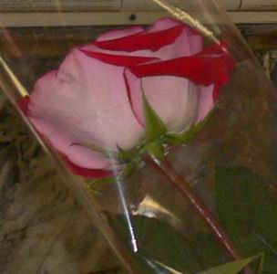 |
| Та самая роза |
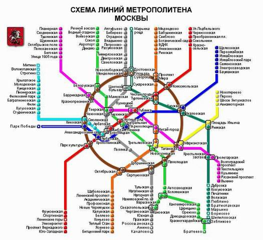 |
| Во запутка, а! Без поллитры никак... |
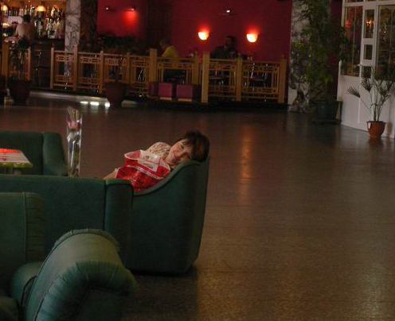 |
| Парадоксально, но если присмотрется, то спустя какое-то время можно увидеть холл гостиницы |
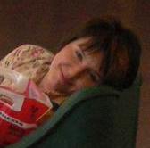 |
| Красота, правда? |
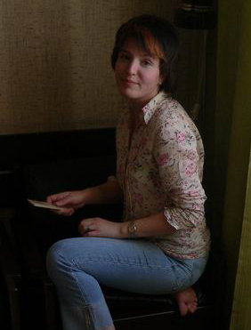 |
| Мур! |
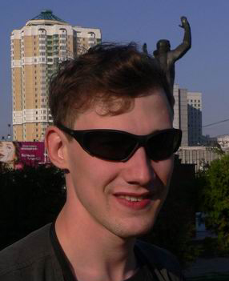 |
| Я на фоне какого-то памятника |
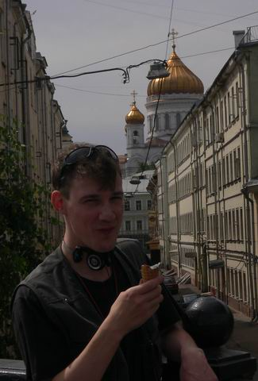 |
| Астарот на фоне Храма Христа Спасителя |
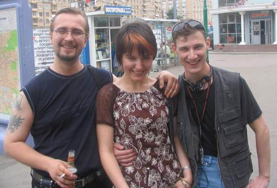 |
| Роуз, Трефптица, и монстер с наушниками, очками, и в жилетке |
| Хуже... то есть лучше! |
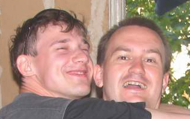 |
| Радость встречи! |
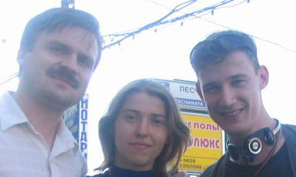 |
| И снова вместе! |
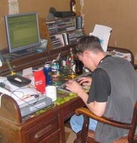 |
| Так рождается флейм |
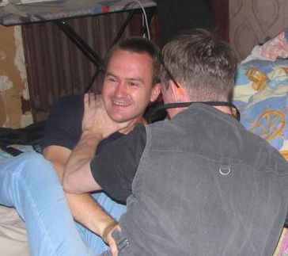 |
| "Ты! Это ты меня отмодерил, я знаю!!! Да я тебя за это!.." |
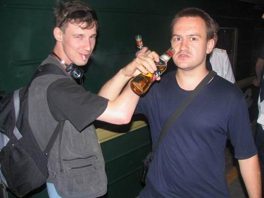 |
| На посошок, ход ноги, и стук колес! |
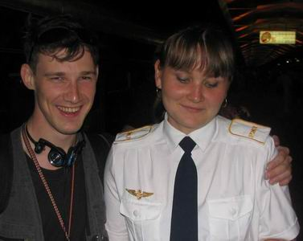 |
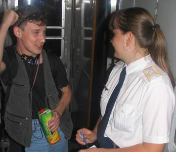 |
| Скромница | "И тут он к-а-а-а-к попер на меня!" |
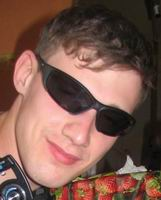 |